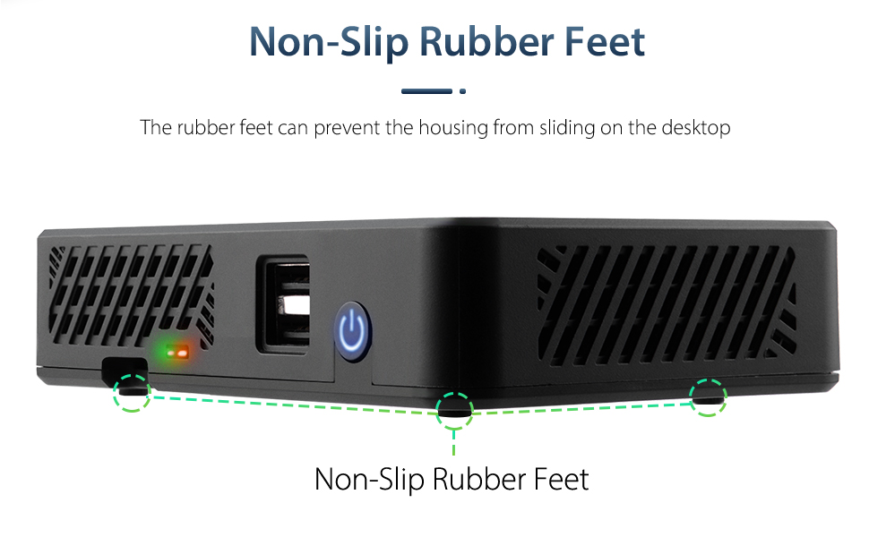
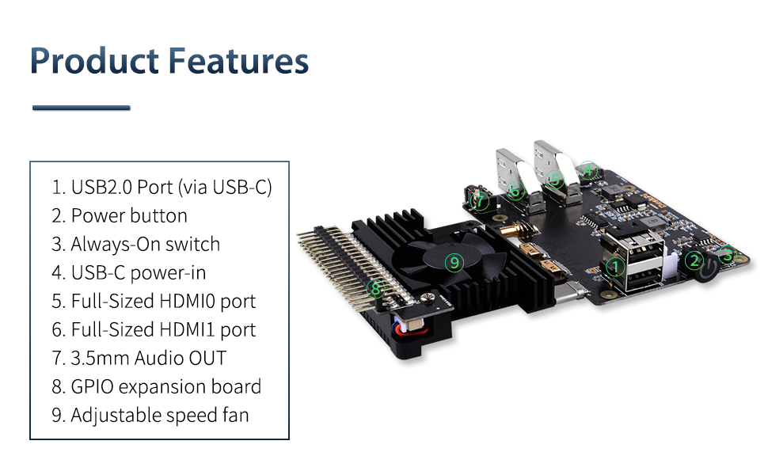
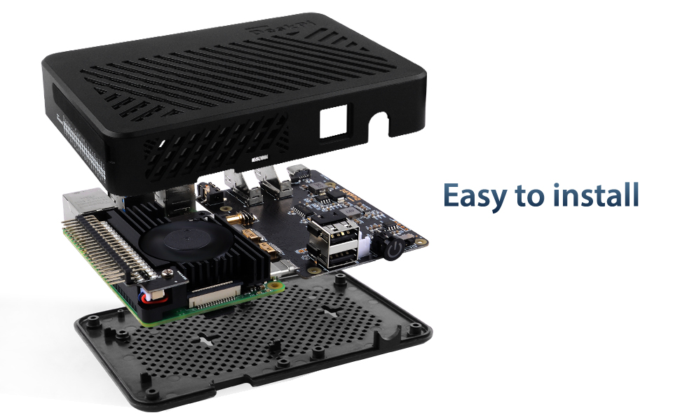
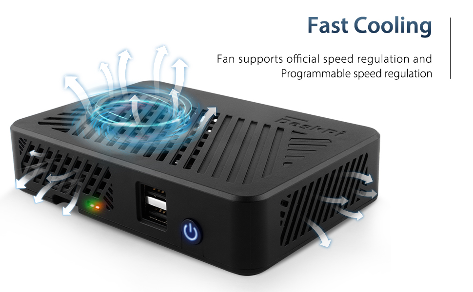
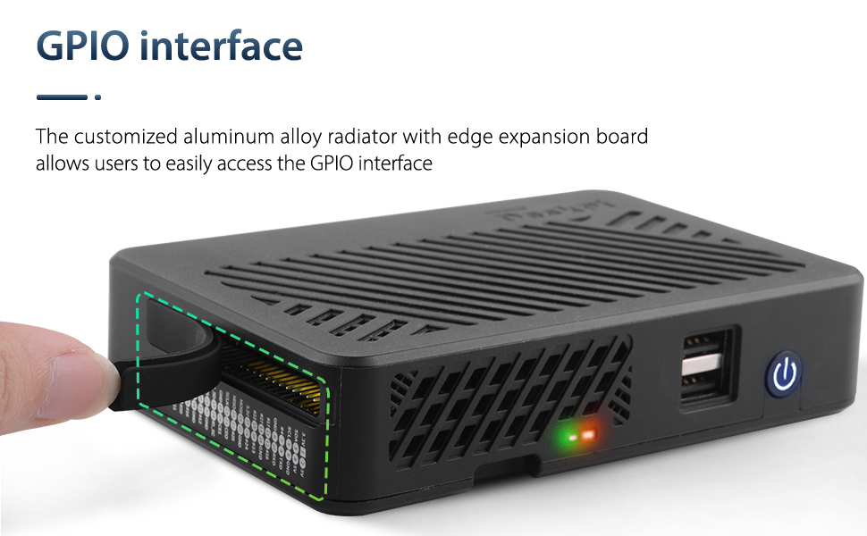
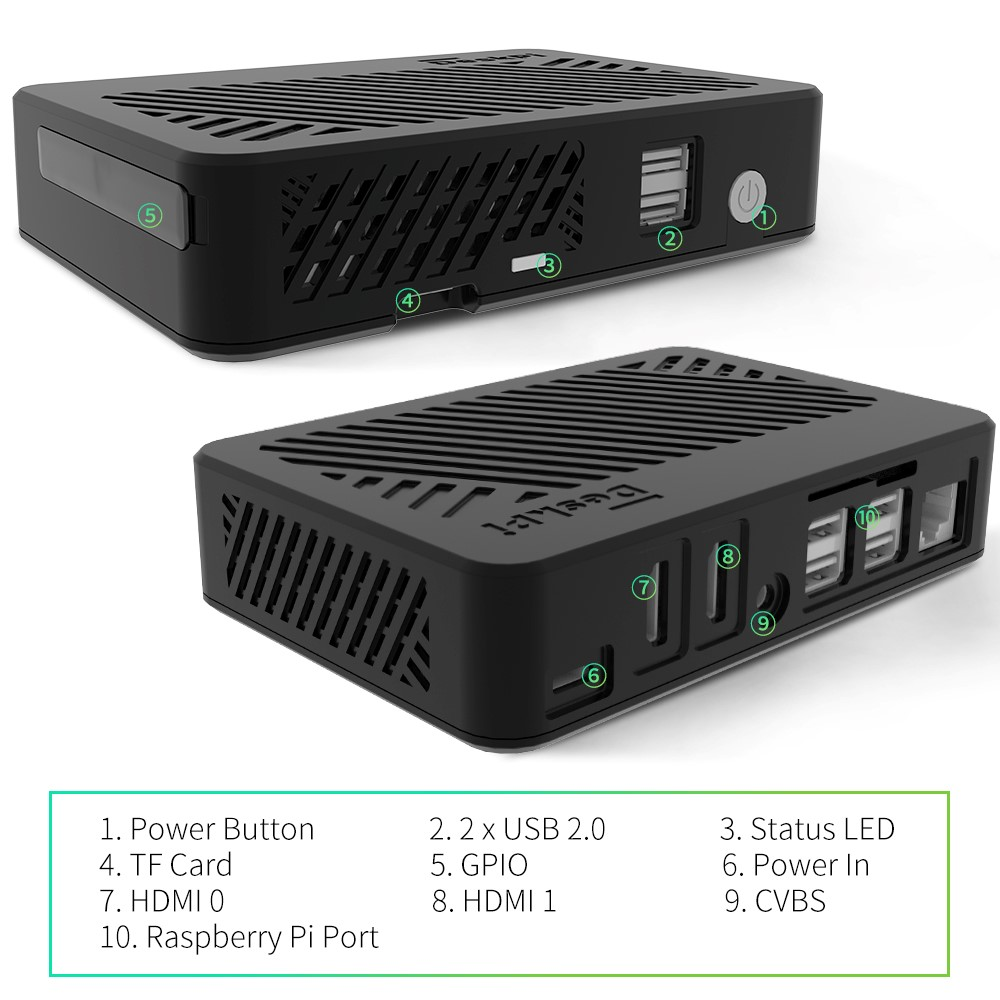

DeskPi Lite (deskpi_v1)
Description
The DeskPi V1 Case is a case made of ABS, and an adapter board is provided inside to transfer the HDMI interface, 3.5mm audio interface, and USB-C power interface of the Raspberry Pi to the back of the panel.
and offer microHDMI to Full-sized HDMI interface, makes it convenient for users to use standard HDMI cables to connect external display devices.
In addition, it provides an ultra-thin aluminum alloy heat sink and supports an adjustable-speed ultra-thin silent fan, which can be safely cut off Power supply for Raspberry Pi by sending a "power_off" signal to the adapter board.

Purchase

Features
-
Convert the
microHDMIto aFull-sized HDMIinterface and place it on the back of the panel with the power interface -
Transfer
3.5mm audiointerface to the back of the panel -
Support Raspberry Pi official
fan temperature control functionviaraspi-configtool. -
Support system shutdown to
safe cut off poweron Raspberry Pi -
Support adjustable fan speed via
PWMprogramming. -
Light weight heat-sink inside.
-
Adjustable speed Fan
Gallery
- Features 
- Easy to install 
- Expansion of 2 USB Ports
- Fast Cooling 
- GPIO Interface Protect 
- Non-Slip Rubber feet
Port definitions

Package includes
- 1 x DeskPi Lite Case (Plastic)
- 1 x CNC alloy aluminum heat sink with PWM fan and GPIO expansion board
- 1 x Port adapter board
- 1 x Instructions
- 6 x Thermal Pads
- 2 x LED indicator lampshade
- 2 x M2.5 Screw
Working Principle
-
RPi -> sending
poweroffto/dev/ttyUSB0means sendingcut off power-> MCU on board: means MCU will cut of power of Raspberry Pi. -
RPi <- Reading
powerofffrom/dev/ttyUSB0meansshutdown system<- MCU on board: system will execute shutdown service or reboot (according to scripts definitions) when power button has been pressed twice.
How to enable fan temperature control?
NOTE: Raspberry Pi OS (Latest) will support this function.
- Open a terminal and typing following command:
Navigate to Performance Options -> P4 Fan -> Yes -> 14 -> 60 -> yes -> finish -> reboot Raspberry Pi.
The fan is support PWM signal control via GPIO14 which is physical pin 12(TXD), it will spinning when the CPU temperature is above 60 degree.
and also you can write your code to control the fan via GPIO14, sending PWM signal will trigger the fan spinning.
This case hardware uses direct GPIO header connections for the included PWM capable fan. Like in your bigger DeskPi case software, you could easily change from a /dev/ttyUSB0 to a GPIO PWM fan control service.
For anyone else wanting to implement some form of PWM fan control, please see the included python3 script code below. This will enable:
< 40'c - Fan 75%, for a minimum of 60sec
40'c to 45'c - Fan 85%, for a minimum of 120sec
> 45'c - Fan 100%, for a minimum of 180sec
#!/usr/bin/python3
import RPi.GPIO as GPIO
import time
import subprocess
GPIO.setmode(GPIO.BCM)
GPIO.setup(14, GPIO.OUT)
pwm = GPIO.PWM(14,100)
print("\nPress Ctrl+C to quit \n")
dc = 0
pwm.start(dc)
try:
while True:
temp = subprocess.getoutput("vcgencmd measure_temp|sed 's/[^0-9.]//g'")
if round(float(temp)) >= 45:
dc = 100
pwm.ChangeDutyCycle(dc)
print("CPU Temp:",float(temp)," Fan duty cycle:",dc)
time.sleep(180.0)
if round(float(temp)) >= 40:
dc = 85
pwm.ChangeDutyCycle(dc)
print("CPU Temp:",float(temp)," Fan duty cycle:",dc)
time.sleep(120.0)
else:
dc = 70
pwm.ChangeDutyCycle(dc)
print("CPU Temp:",float(temp)," Fan duty cycle:",dc)
time.sleep(60.00)
except KeyboardInterrupt:
pwm.stop()
GPIO.cleanup()
print("Ctrl + C pressed -- Ending program")
Then execute it:
How to enable the USB2.0 in front of panel?
-
- Install DeskPi v1 driver.
-
- Add following parameter to
/boot/config.txtfile manually.
- Add following parameter to
DO REMEMBER `reboot` Raspberry Pi to take effect.
How to send power_off signal to adapter board to cut off power?
-
Make sure you have already add
dtoverlay=dwc2,dr_mode=hostto/boot/config.txtfile andrebootRaspberry Pi. -
Check if there is a device called
/dev/ttyUSB0 -
Execute the python demo script in
deskpi_v1/drivers/python/safecutoffpower.py -
you may need to install
pyseriallibrary. -
Recommend: adding this function after
shutdownservice, so that it can safely cut off the power of Raspberry Pi.
How to reboot by double click power buttom?
Principle
when you double click the power button, The MCU on expansion board will send three times poweroffpoweroffpoweroff to serial port on raspberry Pi which generate via dwc2 dtoverlay, called /dev/ttyUSB0, and you can capture it via python script and customized your own script to control the shutdown behavior.
-
Demo code:
-
Install pyserial library to control serial port.
- Create a file named
safe_shutdown.pyand paste following code:
import serial
import time
import os
ser = serial.Serial('/dev/ttyUSB0', baudrate=9600, timeout=3)
while True:
if ser.isOpen():
data = ser.read(16)
data = data.decode('utf-8')
#print(data)
if 'poweroff' in data:
print("System will turn off in 3 seconds")
time.sleep(3)
ser.write(b'power_off')
ser.write(b'power_off')
os.system('sudo sync && sudo init 0')
os.system("sudo reboot") to reboot your Raspberry Pi.